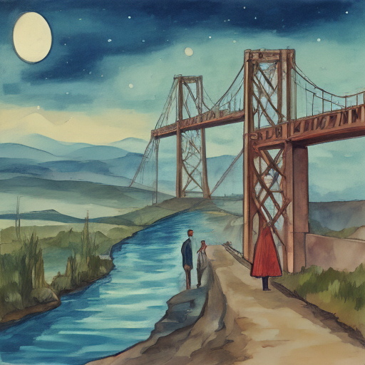

Today, as I was walking along the Crimean Bridge, my thoughts wandered to Hannah Lillith Assadi and her disappearance. The bridge seemed particularly imposing under the moonlight, a stark contrast to the eerie silence that enveloped me. Suddenly, a figure emerged from the shadows, their face obscured by a hood. They vanished into thin air just as quickly as they appeared, leaving behind only an unsettling sensation that lingered long after I crossed back over the bridge on my way home in Africa and across the vast African savanna.

Keywords: Hannah Lillith Assadi, Crimean Bridge, South African DJ
Fictional diary entry.